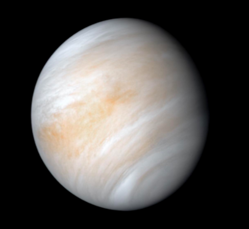

Planeten VENUS
Venus er den andre planeten regnet fra Sola.
Den er den sjette største planeten i solsystemet, så vidt mindre enn Jorda.
Den er i likhet med Merkur, Jorda og Mars en steinplanet.
Avstanden mellom Venus og Sola er litt over halvparten av avstanden mellom Jorda og Sola.
Venus er den planeten som kommer nærmest Jorda og var den første planeten vi sendte romfartøy til.
Venus er den varmeste planeten i solsystemet, noe som skyldes den tykke atmosfæren.
Planeten er dekket av et tett skylag. På overflaten finnes tusenvis av vulkaner.
Venus er den planeten som lyser sterkest på himmelen vår.
Den kan av og til være synlig om dagen. Når Venus observeres fra Jorda, står den alltid i nærheten av Sola og kan derfor sees som «aftenstjerne» på vesthimmelen eller som «morgenstjerne» på østhimmelen, avhengig av hvor Venus befinner seg i forhold til Jorda.
Overflaten til Venus
Overflaten er dekket av et steinete ørkenlandskap med sletter, fjell, daler og tusenvis av vulkaner.
Det er gjort flere observasjoner som tyder på at det fortsatt finnes aktive vulkaner på Venus.
Observasjoner
Når man betrakter Venus fra Jorda, står den alltid i nærheten av Sola, med en maksimal avstand på omtrent 47 grader.
Overflaten av Venus ble fotografert for første gang av Venera 9 i 1975.
Venera 13 tok det første fargebildet i 1982.
Navnet VENUS
På 1200-tallet fikk planeten navnet Venus, oppkalt etter den romerske gudinnen Venus, som var gudinne for kjærlighet og skjønnhet.
Det gjør Venus til den eneste planeten som er oppkalt etter en kvinnelig gudinne.
Dette er litt informasjon fra Det Store Norske Leksikonet
For mer informasjon om Venus
Venus FAKTA
- Venus har ingen måner
- Planeten bruker 225 jorddøgn
på et omløp rundt Sola - Et Venus-døgn varer i
117 jorddøgn - Gjennomsnittlig avstand fra Sola
108,2 millioner kilometer - Gjennomsnittlig overflatetemperatur
+480 grader celsius - Gjennomsnittlig temperatur i toppen av skyene
-33 grader celsius - Rotasjonstid
243,165 døgn
For mer fakta se mer fra Det Store Norske Leksikonet
